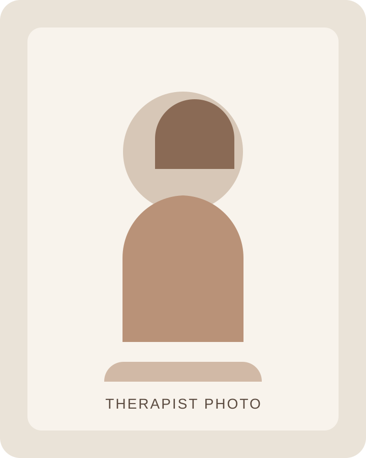

Palette
Blush, sage, warm cream, and muted taupe create softness without losing polish.
This direction is inspired by the soft, airy elegance of erinvahratian.com. It uses a blush-and-sage palette, open spacing, and a more graceful serif treatment to create a calmer, more welcoming first impression.
For this client, the goal is not “spiritual” or overly delicate. It is softness with competence: emotionally welcoming, visually beautiful, and still grounded enough to appeal to discerning therapy clients.
View concept notesMake the practice feel softer, calmer, and more emotionally reassuring at first glance, while still signaling professionalism and strong clinical presence.
A softer visual identity may better match a practice that wants to feel calm, relational, elegant, and safe. This option gives the brand a lighter emotional touch than A, B, or C.

This concept benefits from a portrait that feels softly confident rather than heavily formal: natural light, warm neutrals, relaxed posture, and clean composition. The message should be, “You are in capable hands,” delivered with ease rather than force.
The about section would combine that portrait with concise credentials, clear positioning, and language that feels both intelligent and kind.
Blush, sage, warm cream, and muted taupe create softness without losing polish.
Best if the site should feel graceful, calm, and emotionally safe from the first screen.
The copy and credentials need to stay crisp so the site still reads as serious, competent therapy rather than generic lifestyle branding.